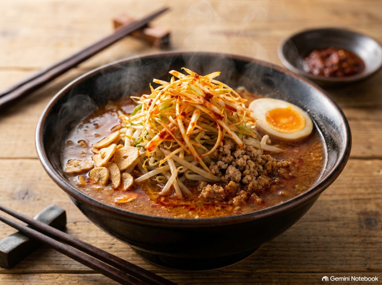

★ カテゴリ特選

まずはこれを作れ！極上一杯
【15分で完全再現】日本一旨いチェーン店風 濃厚ネギ味噌ラーメン
日本一旨いチェーン店のネギ味噌ラーメンをたった15分で完全再現！炒めニンニクと胡麻油の香ばしさ、シャキシャキ辛ネギの秘伝レシピを大公開。
この再現レシピを作る →お品書き・全レシピ一覧
🍜 スープに合わせる特選麺 ＆ 調理器具
プロの味に近づけるために店主が実際に愛用しているアイテムです。

乳化の必須アイテム
スープが一瞬で極上乳化！「ブラウン ハンドブレンダー」
家庭で作るスープの油分と水分を激しく撹拌してクリーミーに強制乳化。一風堂や天下一品のような濃厚ドロドロスープを作るなら絶対に欠かせない神器です。

万能プロ調味料
プロのベーススープの隠し味！「味の素 KK中華あじ」
豚骨と鶏ガラ肉エキスに香味野菜の旨味を凝縮。これを入れるだけで家ラーメン特有の「何か物足りない」が一気に解決する秘密兵器です。

店主激推し麺
至高のストレート極細麺「マルタイ 棒ラーメン」
スープにとろみが移らない乾麺の傑作。一蘭や博多豚骨のような本格的な極細ストレート麺を家で楽しむなら絶対にこれ！